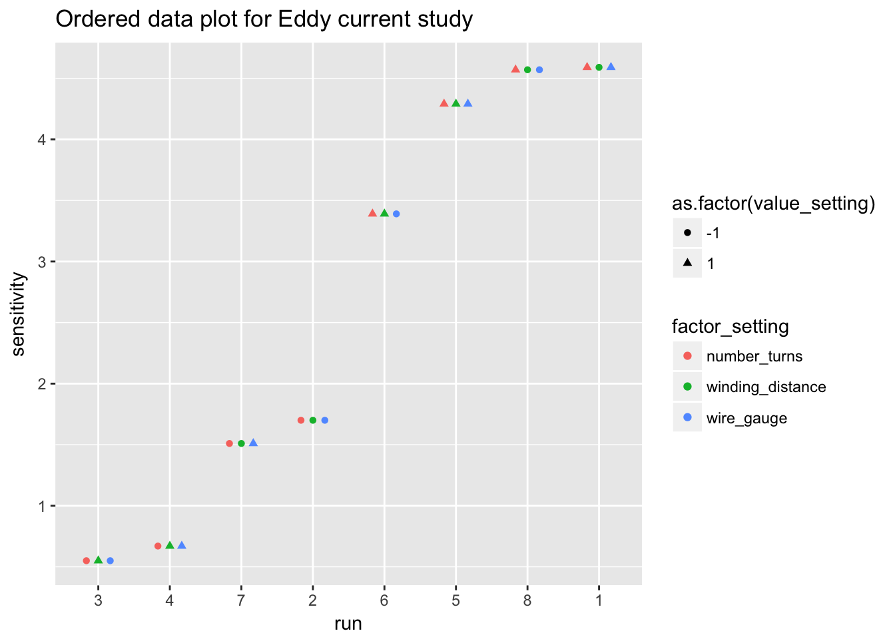
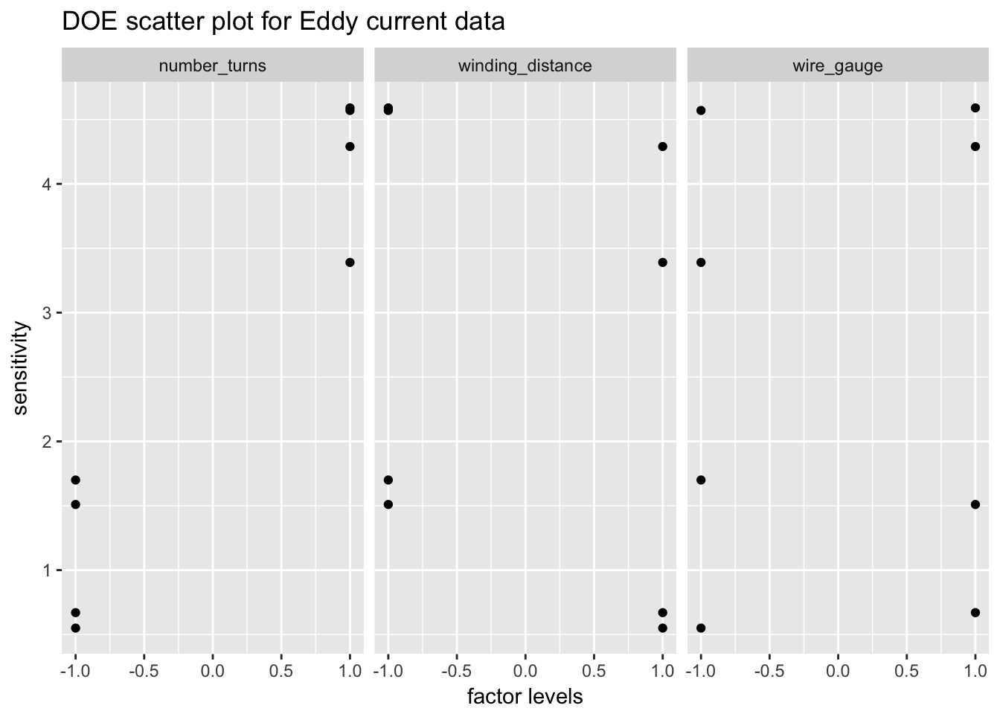
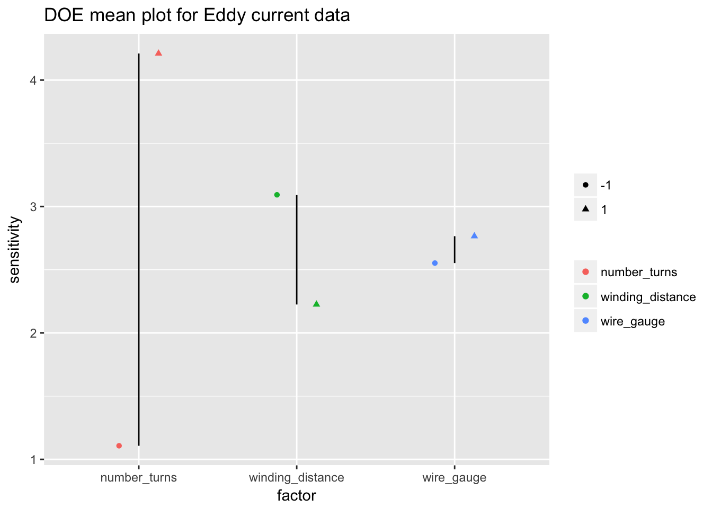

5 Process Improvment
5.1 Packages used in this chapter
5.2 Case Stuidies
5.2.1 Eddy current probe sensitivity
Eddy current probe sensitivity
5.2.1.1 Background
The data for this case study is a subset of a study performed by Capobianco, Splett, and Iyer. Capobianco was a member of the NIST Electromagnetics Division and Splett and Iyer were members of the NIST Statistical Engineering Division at the time of this study.
The goal of this project is to develop a nondestructive portable device for detecting cracks and fractures in metals. A primary application would be the detection of defects in airplane wings. The internal mechanism of the detector would be for sensing crack-induced changes in the detector’s electromagnetic field, which would in turn result in changes in the impedance level of the detector. This change of impedance is termed “sensitivity” and it is a sub-goal of this experiment to maximize such sensitivity as the detector is moved from an unflawed region to a flawed region on the metal.
5.2.1.2 Statistical goals
The case study illustrates the analysis of a 23 full factorial experimental design. The specific statistical goals of the experiment are: (1) Determine the important factors that affect sensitivity. (2) Determine the settings that maximize sensitivity. (3) Determine a predicition equation that functionally relates sensitivity to various factors.
5.2.1.3 Data
eddy_probe <- read_table2("NIST data/SPLETT3.DAT",
skip = 25, col_names = FALSE, col_types = "diiii") %>%
rename(probe_impedance = X1, number_turns = X2, winding_distance = X3, wire_gauge = X4, run_sequence = X5)
eddy_probe## # A tibble: 8 x 5
## probe_impedance number_turns winding_distance wire_gauge run_sequence
## <dbl> <int> <int> <int> <int>
## 1 1.70 -1 -1 -1 2
## 2 4.57 1 -1 -1 8
## 3 0.550 -1 1 -1 3
## 4 3.39 1 1 -1 6
## 5 1.51 -1 -1 1 7
## 6 4.59 1 -1 1 1
## 7 0.670 -1 1 1 4
## 8 4.29 1 1 1 55.2.1.4 Ordered data plot
There are several differnet ways we could structure an ordered data plot; below is an example.
eddy_probe_tidy <- eddy_probe %>%
gather(key = factor_setting, value = value_setting, number_turns, winding_distance, wire_gauge)
eddy_probe_tidy## # A tibble: 24 x 4
## probe_impedance run_sequence factor_setting value_setting
## <dbl> <int> <chr> <int>
## 1 1.70 2 number_turns -1
## 2 4.57 8 number_turns 1
## 3 0.550 3 number_turns -1
## 4 3.39 6 number_turns 1
## 5 1.51 7 number_turns -1
## 6 4.59 1 number_turns 1
## 7 0.670 4 number_turns -1
## 8 4.29 5 number_turns 1
## 9 1.70 2 winding_distance -1
## 10 4.57 8 winding_distance -1
## # ... with 14 more rowsggplot(eddy_probe_tidy) +
geom_point(aes(reorder(run_sequence, probe_impedance), probe_impedance, colour = factor_setting, shape = as.factor(value_setting)), position = position_dodge(width = 0.5)) +
labs(title = "Ordered data plot for Eddy current study", y = "sensitivity", x = "run")
5.2.1.5 DOE scatter plot
ggplot(eddy_probe_tidy) +
geom_point(aes(value_setting, probe_impedance)) +
facet_wrap(~factor_setting) +
labs(title = "DOE scatter plot for Eddy current data", y = "sensitivity", x = "factor levels")
5.2.1.6 DOE mean plot
eddy_probe_means <- eddy_probe_tidy %>%
group_by(factor_setting, value_setting) %>%
summarise(n = n(), average_factor = mean(probe_impedance))
eddy_probe_means## # A tibble: 6 x 4
## # Groups: factor_setting [?]
## factor_setting value_setting n average_factor
## <chr> <int> <int> <dbl>
## 1 number_turns -1 4 1.11
## 2 number_turns 1 4 4.21
## 3 winding_distance -1 4 3.09
## 4 winding_distance 1 4 2.22
## 5 wire_gauge -1 4 2.55
## 6 wire_gauge 1 4 2.76ggplot(eddy_probe_means, aes(factor_setting, average_factor)) +
geom_point(aes(colour = factor_setting, shape = as.factor(value_setting)), position = position_dodge(width = 0.5)) +
geom_line(aes(group = factor_setting)) +
labs(title = "DOE mean plot for Eddy current data", y = "sensitivity", x = "factor") +
theme(legend.title = element_blank())
5.2.1.7 DOE interaction plot for eddy current data
eddy_probe_interaction <- lm(average_factor ~ factor_setting, data = eddy_probe_means)
summary(eddy_probe_interaction)##
## Call:
## lm(formula = average_factor ~ factor_setting, data = eddy_probe_means)
##
## Residuals:
## 1 2 3 4 5 6
## -1.5512 1.5513 0.4337 -0.4338 -0.1062 0.1062
##
## Coefficients:
## Estimate Std. Error t value Pr(>|t|)
## (Intercept) 2.659e+00 9.320e-01 2.853 0.065 .
## factor_settingwinding_distance -8.802e-16 1.318e+00 0.000 1.000
## factor_settingwire_gauge -2.220e-16 1.318e+00 0.000 1.000
## ---
## Signif. codes: 0 '***' 0.001 '**' 0.01 '*' 0.05 '.' 0.1 ' ' 1
##
## Residual standard error: 1.318 on 3 degrees of freedom
## Multiple R-squared: 1.892e-31, Adjusted R-squared: -0.6667
## F-statistic: 2.838e-31 on 2 and 3 DF, p-value: 1